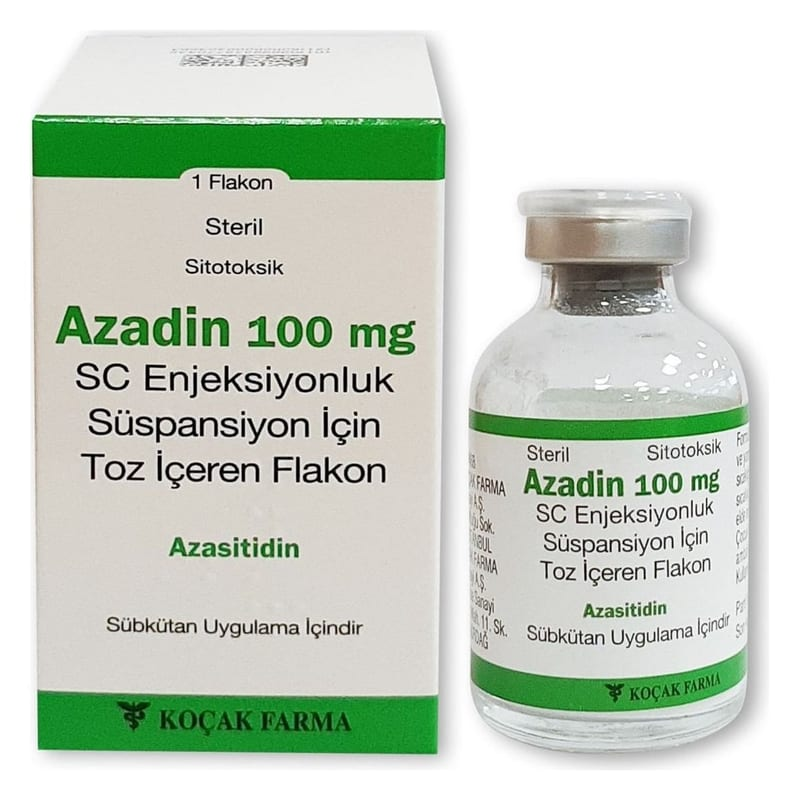

Azadin 100 mg SC Enjeksiyonluk Süspansiyon İçin Toz İçeren Flakon, Flakon, 1 Adet

Ne için kullanılır
KT · Bölüm 1• Azasitidin, anti-neoplastik ilaçlar adı verilen bir ilaç grubuna dahildir ve kanser hücrelerinin büyümesine engel olur.
• Etkin madde olarak 100 mg azasitidin ve yardımcı madde olarak D-mannitol içerir. Enjeksiyonluk süspansiyon için beyaz toz halinde olup, 100 mg azasitidin içeren cam flakonda takdim edilir. • AZADİN kök hücre transplantasyonuna uygun olmayan yetişkin hastalarda aşağıdaki durumların tedavisi için kullanılır: • Yüksek risk Miyelodisplastik Sendrom (MDS). • Kronik miyelomonositer lösemi (KMML). • Dünya Sağlık Örgütü (WHO) sınıflandırmasına göre %20-%30 olgunlaşmamış (genç) hücreye sahip ve çoklu serili displazisi (hücre gelişim kusuru) olan veya % 30’dan fazla olgunlaşmamış (genç) kemik iliği hücresi olan 65 yaş ve üstü Akut miyeloid lösemi (AML) hastalarında. Bu hastalık kemik iliğini etkilemekte ve normal kan hücresi üretiminde problemlere yol açmaktadır. AZADİN kanser hücrelerinin büyümesini engelleyerek etki gösterir. Azasitidin hücrelerin genetik materyallerine (ribonükleik asid (RNA) ve deoksiribonükleik asit (DNA)) etki eder. Hücre genlerinin açılmasını ve kapanması değiştirerek ve yeni RNA ve DNA üretimine müdahale ederek etki ettiği düşünülmektedir. Bu etkilerin, miyelodisplastik sendromda kemik iliğindeki genç kan hücrelerinin büyüme ve olgunlaşması ile ilgili sorunları düzelttiği ve lösemide de kanser hücrelerini öldürdüğü düşünülmektedir. AZADİN’in nasıl etki gösterdiğine ya da bu ilacın sizin için neden reçete edildiğine dair sorularınız var ise doktorunuza sorunuz.